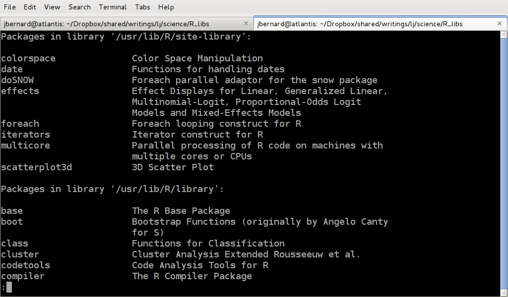
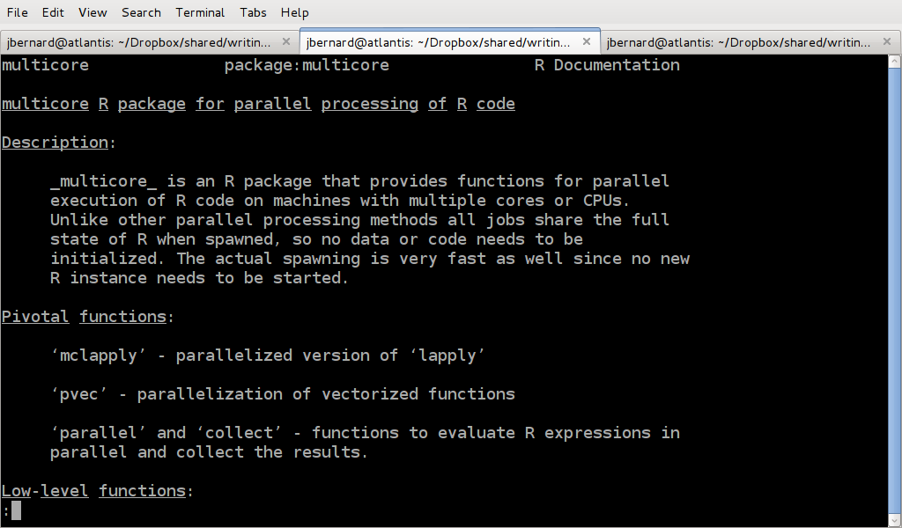
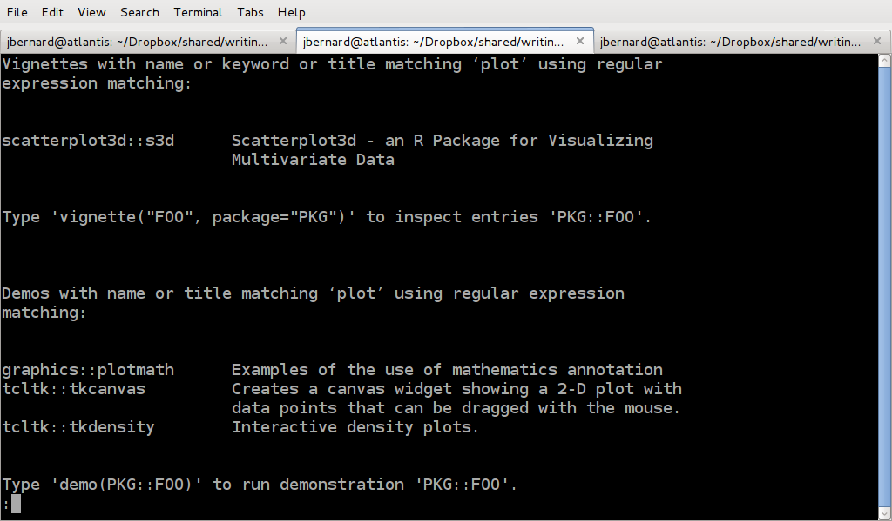
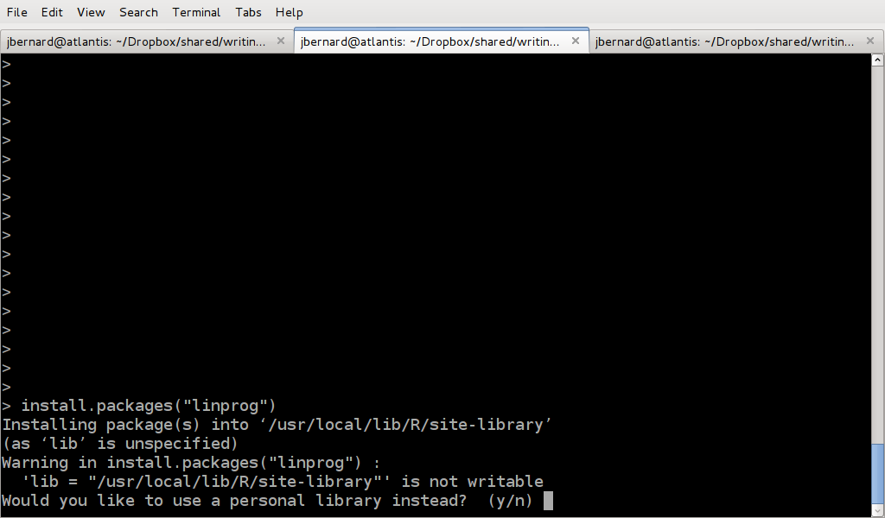
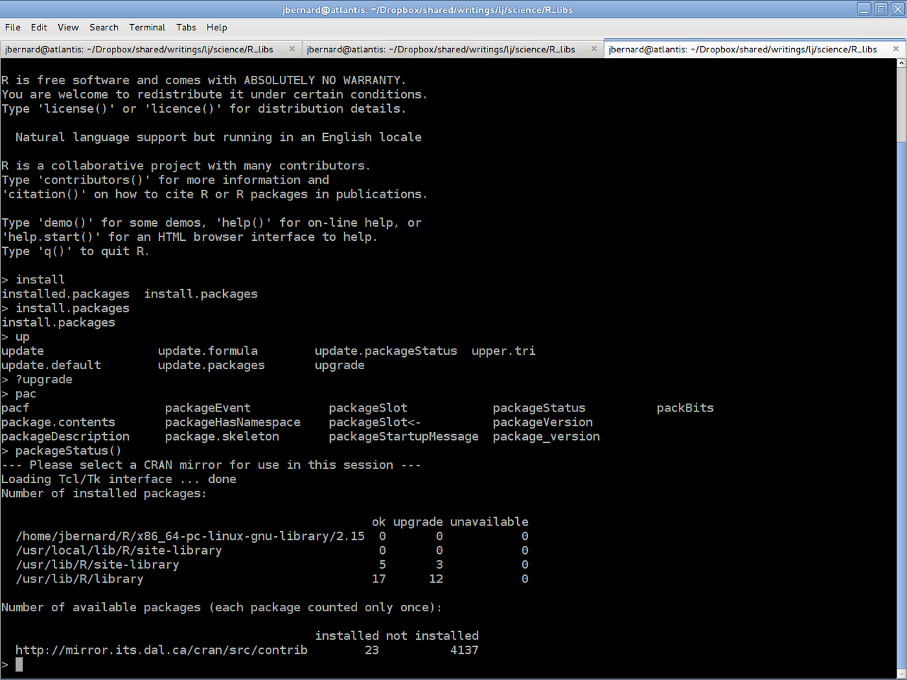
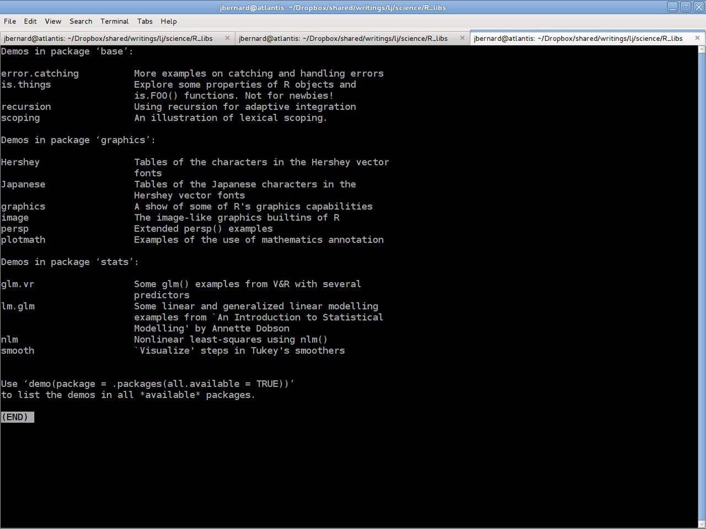
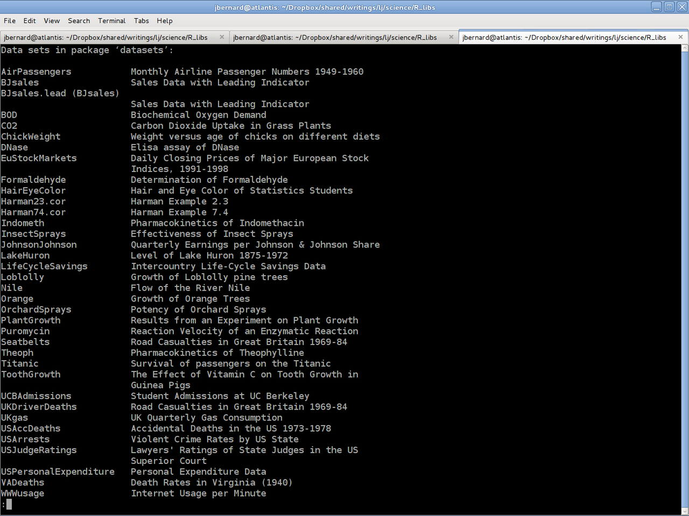
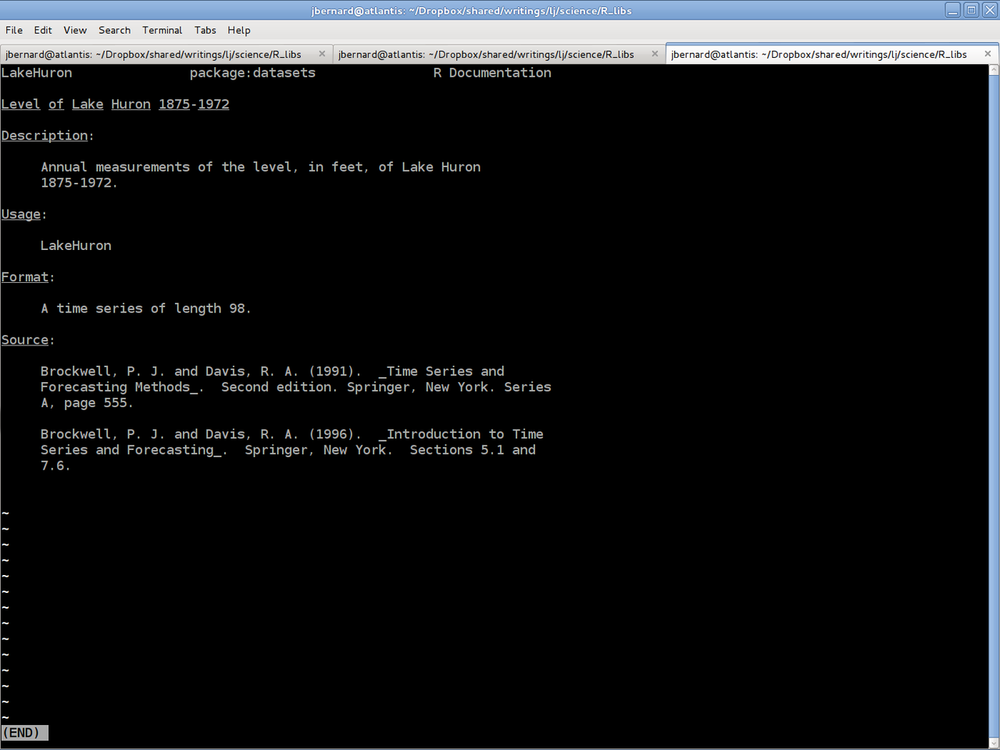

Handling R Packages
In a previous post, we looked at a quick introduction to the statistics program R. One of the great features of R is its modular nature. As people develop new functionality, R is designed to make it relatively easy to package up this new functionality and share it with other users of R. In fact, there is an entire repository of such packages, offering all sorts of goodies for your statistical needs. This month, we'll look at how to see what libraries are already installed, how to install new ones and keep them up to date. We'll finish off with a quick look at how to create your own.
The first step is to take a look and see what libraries are already installed on your system.

You can do this by running 'library()' from within R. This will give you a list of all of the libraries installed in the various locations visible to R. If you find the library that you are interested in, your work is almost done. In order to get R to load the library of interest into your workspace, you will need to call 'library' with the name of the library in the brackets. So, let's say you wanted to do parallel code with the multicore library. Then you would call 'library("multicore")'. If you want to learn more about the library, R includes a help system that is modelled after the man page system used in Linux. There are two ways you can access this. The first is the use the 'help()' command. So in this case, you would run 'help("multicore")'.

The shortest way to get help is to use the special character '?'. So you would type '?multicore' to get the same result. A related command that is good to know is '??'. It does a search through the library names and descriptions based on the text given. For example, '??plot' will pull up entries related to the word plot.

But, what if the library you are interested in isn't already on your system? You will need to get it installed somehow. Luckily, R has a full package management system built in. Installing a package is as easy as running 'install.packages()', where you hand in a list of package names. But, what packages are available for installation? The R project has a full repository of packages, ready for you to use. You can find them at http://cran.r-project.org. On the left hand menu, you will find an entry called "Packages", which will bring you to list of packages. You can search alphabetically by name or by category. Let's say you are interested in doing linear programming. On CRAN, you will be able to find a package called 'linprog', which you can install with the command 'install.packages("linprog")'. When you first run this command, it should come back with an error.

By default, R will try and install packages into the system library location. But unless you are running as root (and you aren't doing that, right?), you won't have the proper permissions to do so. Therefore, R will ask if you wish to install the new package into a personal library storage location in your home directory. After you agree to this, it will go ahead and try to download the source for this package. If this is the first time you have installed a package, R will ask you to select a CRAN mirror to download from. This mirror will be used for all future downloads. By default, R will also download and install any dependencies the requested package needs. So in this sense, it really is a proper package management system.
For many packages, all that is involved is strictly R code. But in some cases, the author may have written part of the code in some other language, like C or FORTRAN, and wrapped it in R code. In these types of packages, this other code would need to be compiled into binary code before it can be used. But how can you do that? Well, the R package system can actually handle compiling external code as part of the installation process. In some cases, this external code may need other third-party libraries in order to be compiled. In order to hand in locations for these, you will need to hand in some options to the 'install.packages' function call. Checking the help page (with '?install.packages'), you can see that you can include installation options as "INSTALL_opts". So, now that you have your collection of packages all installed and configured on your system, what do you do if a bug gets fixed in one of them? Or, what happens if a new version comes out with a better algorithm? Well, the package management system that R uses can handle this rather well. You can check to see if any packages need to be updated by running 'packageStatus()'.

If you see that there are updates available, you can get these updates installed by using the command 'update.packages()'. This command will then go through each available update and ask you whether you wish to install the new version or not.
Many packages include either demos, data files, or both. The demos walk you through some examples of how to use the functions provided by the package in question. To see what demos are available, you can call 'demo()'.

To run a particular demo, for example the nlm demo, you can run 'demo(nlm)'. Many packages also include sample data files that you can use when you are learning to use the new functions. To see what data files are available, you can call 'data()'.

To load a particular data file, you will need to call data with the data file you are interested in. For example, if you wanted to play with water levels in Lake Huron, you would call 'data(LakeHuron)'. You can get more information on the data, including a description and a list of the variables available, by running '?LakeHuron'.

We have been looking at dealing with individual packages, but sometimes, you will need functions provided by several different packages. In R parlance, there is something called a task view. These are groups of packages that are all useful for a particular area of research. If you are interested in using task views, you will need to start by installing the 'ctv' package. In R, run 'install.packages("ctv")' to install the main task view package. Once this is done, you can load the library with 'library("ctv")'. Now, you will have new functions included in the 'install' and 'update' packages. You can install a view, like the Graphics view, you can simply run 'install.views("Graphics")'. You can update these views as a whole with the command 'update.views()'. These task views, like all of the packages, are written and maintained by other users like yourself. So, if you have some area of research that isn't being served right now, you can step in and organize a new view yourself.
Up till now, we have been looking at how to use packages that have been written and provided by other people. But, if you are doing original research, you may end up developing totally new techniques and algorithms. Science and knowledge advance when we share with others, and so R tries to make it easy to create your own packages and share them with others through CRAN. There is a fixed directory layout, where you can put all of your code. You also need to include a file called 'DESCRIPTION', can a writeup of your package. An example of this file would look like
Package: pkgname Version: 0.5-1 Date: 2011-01-01 Title: My first package Author@R: c(person("Joe", "Developer", email = "me@dot.com"), person("A.", "User", role="ctb", email="you@dot.com")) Author: Joe Developer <me@dot.com>, with contributions from A. User <you@dot.com> Maintainer: Joe Developer <me@dot.com> Depends: R (>= 1.8.0), nlme Suggests: MASS Description: A short (one paragraph) description License: GPL (>= 2) URL: http://www.r-project.org, http://www.somesite.com BugReports: http://bugtracker.com
Once you have all of your code and data files written and packaged, you can go ahead and run a check on your new package by running the command 'R CMD check /path/to/package' on the command line. This will run through some standard checks to be sure that everything is where R expects things. Once your package passes these checks, you can run 'R CMD build /path/to/package' to see if R can build your package properly. This especially important if you have external code in another programming language. Once your package passes the checks and builds correctly, you can bundle it up as a tarball and send it up to ftp://CRAN.R-project.org/incoming/ as anonymous, and then send an email to CRAN@R-project.org. Once your package has been checked by someone at CRAN to verify that it builds correctly, your newly created package will be added to the repository. Fame and fortune will be soon to follow.
Hopefully this article has provided enough information to help you get even more work done in R. And remember, we all progress when we share, so hopefully you will be able to add to the functionality available to the whole community.